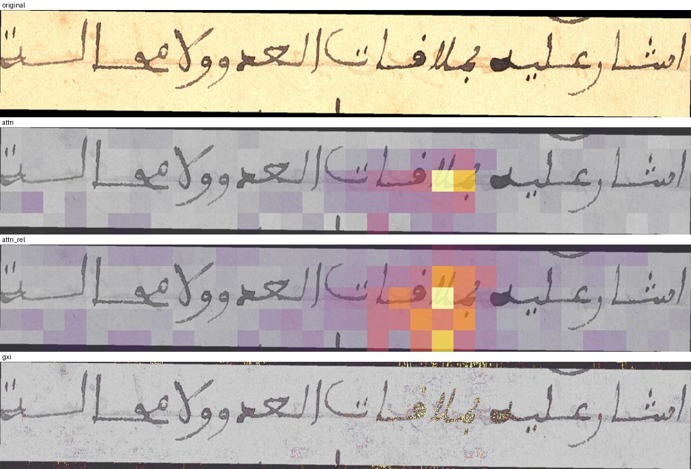

Every paper the research layer has drawn on so far: its main method, what we can borrow, what we have already built from it, and the next test our current results make possible. The papers come first, then our results from the deep dive, then the queue of tests we can run now without new data.
Grouped by theme. “What we did” is our own result, not the paper’s. Items marked unverified have details not yet checked against the primary source (task L7).
Our status
Next step
Search
Part 2 · Results · deep dive 2026-10-09
Arabic-script HTR studies: results, notes and next experiments
The four Luleå preprints are the closest prior work to ours. This section plots their results, shows what we re-measured on our own data, and lists the experiments and augmentation ideas they lead to. Paper numbers are transcribed from the papers; “ours” numbers come from scripts/substitution_analysis.py (R2.6). The attribution and localization spike of 2026-10-10 has its own part below, with a link to its explorer page.
One group, four papers in six months
All four come from Sana Al-azzawi’s work in Marcus Liwicki’s group at Luleå University of Technology, co-supervised by Elisa Barney Smith (document image analysis), funded by the EU MARTINA project and WASP. They read as chapters of one PhD thesis, built on one CRNN code base and the same six Arabic-script datasets.
Jan 2026 · v4 JunLabel errors (CER-HV)Clean the data first: 6–9 % errors in Muharaf and Ajami.
May 2026Cross-lingual joint trainingArabic + Urdu + Persian help each other at 100–1,000 lines.
May 2026Role of sequence modellingThe gain comes with the BiLSTM, not the shared CNN features.
Jun 2026 · ICPR-WArabic–Latin gapThe gap persists after cleaning; shape count and dots explain part of it.
What this tells us
The arc is data quality → transfer → explaining the gap. Their stated next steps are synthetic data, pre-training then fine-tuning, transformer models, and Latin↔Arabic transfer. Two of our ideas (multilingual pre-training with frozen layers, and data-scaling curves) sit on that path, so we risk overlapping with them. We should move on these early or talk to them.
They never test VLMs. Every result is a 10 M-parameter CRNN or HTR-VT. Our angle (large VLMs, diacritic policy, Maghrebi and NAKBA, error decomposition) complements theirs and does not duplicate it. Their public CRNN predictions give us a free CRNN reference on Muharaf and KHATT.
All four are preprints, apart from one ICPR 2026 workshop paper, and they share one first author and one pipeline. The numbers are consistent across papers (KHATT CRNN about 8.5 % CER in all of them), but nobody outside the group has replicated them yet.
A possible contact. We use their logs and need a licence answer for them (task X3), their PHTD cleaned set is on the Hub, and their cross-lingual code is “under reconstruction”. A short email could cover the licence, the release status of the code, and our VLM-side numbers.
Gap paper (alazzawi2026gap): what the results show
The gap is large with little data and never closesCRNN test CER against training lines (log scale), Table 3; the last point of each line is the full training set. Arabic-script sets (solid) sit above the Latin sets (dashed) at every size except NUST-UHWR, the cleanest set. Muharaf’s 74 % at 100 lines comes largely from label noise.Show the tableCleaning halves the gap at 100 lines; a 4-point gap remains at full dataAverage CER of the three noisy Arabic-script sets (Muharaf, Ajami, PHTI) before and after CER-HV cleaning, against the Latin average, Table 5. The gap falls from +24.2 to +11.8 points at K = 100 and from +6.0 to +4.4 at full data.Show the table
Shapes, not linesKHATT needs about 150k training characters to reach 10 % CER, IAM about 34k. Arabic has more visual classes and a heavier tail, so data should be sized in characters per (letter × position) shape.
82 vs 50 shapesTheir count merges isolated and final forms. Under that rule Muharaf train has 88 shapes (72 for the 28 core letters). Our profiler’s 112–131 keeps isolated and final apart and includes hamza carriers.
Positional labels did not helpEncoding initial, medial and final forms explicitly in the CTC labels gave no consistent gain. That matters for our output-unit question (D2).
Architecture does not close itHTR-VT (53.5 M parameters) matches the 10 M CRNN: 8.9 vs 8.5 % on KHATT and 11.8 vs 10.1 % on Muharaf.
Is the similar-substitution metric the only thing we can borrow? No.
Yes, on our predictions and on their published CRNN predictions
done, R2.6
Shape inventory, iso/fin-merged definition
Yes, text only
done: Muharaf train 88
Train vs test shape-frequency tail (Fig. 6)
Yes, text only: the share of test letters whose shape has fewer than N training examples
new task R1.7
Lexical diversity: unique lines, duplication, mean max Jaccard, unique words, TTR (cross-lingual Table 3)
Yes, text only, for every dataset and K-subset
new task R1.6
CER vs training lines and vs training characters (Fig. 3, Fig. 5)
Needs training. Run E3 on their K grid with our LoRA recipe, and a CRNN reference (E5)
E3 regridded, new E5
Top confusion pairs (Fig. 7)
Yes
done, R2.6
R2.6: their metric, on the same lines, for their CRNN and our models
VLMs do not confuse dots less than the CRNN. On the same Muharaf test lines, similar-letter substitutions are 16–23 % of a fine-tuned VLM’s substitutions against 29–41 % of the CRNN’s. Per character, though, the VLMs make as many or more (1.7–3.6 % against 1.2–1.5 %). Their share is lower only because they make two to five times more of every other substitution.
Similar-letter substitutions per 100 GT charactersHarakat stripped on both sides. Dot = the model; open ring = the CER-HV CRNN scored on exactly the same lines. Paper rows are Table 6 (rate = substitution rate × similar share). First check: on their own published predictions our metric reproduces their substitution rate exactly (4.17 %) and gives a 25.7 % similar share, 32.3 % if hamza, ة/ه and ى/ي pairs count as similar. The paper’s 29.4 % lies between the two.Show the table
The “other” bucket, namedShare of all edits, 85 competent model × dataset pairs. “Other” was 58 % of edits. It splits into letter substitutions outside the dot and shape groups (25 %), letter deletions (17 %), letter insertions (12 %) and non-letters (4 %). Done criterion met: its parts are named.Most-confused letter pairsShare of 185,902 letter substitutions. Only 6 % fall in our hand-written shape groups and 13 % are dot pairs; 65 % match no group. Loop and stroke pairs (ا/ل, ل/ن, ع/م, ح/م, ف/م) are frequent, so the groups should be position-aware and learned from data. Adding them leave-one-dataset-out raises the similar share from 14–28 % to 20–37 %.
Label-error paper (alazzawi2026labelerr): what is released, and how to use it
Artefact
Where
What it lets us do
Human-verified review logs per split (ImageID, verdict, GT, CRNN prediction) for Muharaf, KHATT, PHTI, NUST-UHWR, Ajami
Exclude flagged lines (X2, done), or use the CRNN prediction as a pseudo-label for “wrong transcription” lines
CRNN predictions for every line (raw and clean-trained)
same repo, *_results_epoch_*.csv
A CRNN reference with no training (R2.6 above)
Cleaned PHTD line images and splits
huggingface.co/datasets/sana-ngu/PHTD
A Persian set for the V4 cross-script gate
Cleaned Muharaf, KHATT, PHTI, Ajami images
Not released as images. “Cleaned” means the logs’ exclusion lists.
Rebuild the clean split from the logs, as rescore_muharaf_clean.py does
Two limits: the repository has no licence file, so we download the logs and do not vendor them; and they clean by exclusion, not correction. Their “script mismatch” flags (998 of the 1,431 Muharaf train flags) are correct labels that their Arabic-only charset could not read. For a VLM they are valid training data.
Their resultCleaning test splits moves CER by up to −1.6 points (Muharaf); retraining on cleaned train adds little except for Ajami.
Our result (X2)Dropping the 126 flagged Muharaf test lines moves our models’ CER by −0.4 to +0.9 points and changes no rank.
Review toolLabel review: 458 candidates, made up of all 218 CER-HV-reviewed Muharaf test lines (their verdict hidden until you decide) and the top 25 consensus suspects in each block. Verdicts are stored per reviewer, outside the datasets. It feeds R4.1.
What joint training buys, by architecture and target sizeΔCER = CER with both auxiliary Arabic-script sets (J = 2) minus target-only CER (J = 0); below zero is a gain. CRNN and HTR-VT from the cross-lingual paper, Table 1; CNN-only from the sequence-modelling paper, Table 2. HTR-VT gains most because it starts worst. The CNN-only model gains little and sometimes loses at K ≥ 500, which the authors read as transfer living in the sequence model.Show the table
Gains go to shared, rare lettersث ض ظ خ gain 5–8 points on KHATT. Letters unique to one language stay flat or get worse (Urdu ٹ ڈ ڑ, +3–4 points).
Diversity matters more than sizePHTD (738 unique words, TTR 0.05 at K = 1000) gains most. Mixing data helps a narrow target most.
Balanced batches did not helpEqual target/auxiliary batches did no better than proportional mixing.
Your idea: multilingual pre-training, then freeze the early layers
This has been tested within Latin, but not across scripts into Arabic as far as our search found. Aradillas et al. pretrained a CNN-BLSTM on a large Latin set and fine-tuned on small historical sets with layers frozen or free. Unfreezing everything was best; freezing at most CNN layers 1–3 was harmless; freezing more always hurt (aradillas2021boosting). Kohút and Hradiš found plain full fine-tuning a strong baseline for new writers: −25 % relative CER with 16 lines, −50 % with 256 (kohut2023finetuning). The sequence-modelling paper adds a twist: cross-script gain goes with the BiLSTM, not the shared CNN. So the open question is which part transfers across scripts:
Hypothesis A (yours): early CNN layers learn script-independent stroke features (edges, curvature, stroke width) and can be frozen after Latin + Arabic-script pre-training.
Hypothesis B (theirs): the transferable part is sequential context, so a pretrained BiLSTM matters more than a frozen CNN.
Test (E7): pretrain the CRNN on Latin (IAM, READ, NorHand), on Arabic-script (KHATT, NUST, PHTD) and on both. Fine-tune on K ∈ {100, 500, 1000} target lines with four freeze settings: none, CNN 1–3, all CNN, BiLSTM only. Report ΔCER against joint training. E1 (frozen vs unfrozen ViT) is the same question at VLM scale.
Script styles: the Maghrebi dot convention, measured
New finding. In Maghrebi script qāf carries one dot above (where Mashriqi writes fā) and fā one dot below. A Mashriqi-trained model should therefore read Maghrebi qāf as fā. Base AIN-7B does so on 23–27 % of qāfs in RASAM, against 2–3 % in KHATT and NAKBA. The opposite error (ف→ق) stays at 2–3 % everywhere. Fine-tuning on Muharaf cuts the error to 4–10 %. That confusion would sit inside the “dot” bucket, where nobody would otherwise see it.
ق read as ف, per qāf in the ground truthEach model competent on a RASAM set, on the datasets it read; bars are line-bootstrap 95 % intervals. The RASAM-2 paper describes the same family of errors qualitatively for its CRNN: fā read as bā, both with a dot below (vidalgorene2024rasam2). A 2026 cross-dataset study finds that OCR-conditioned VLM correction fails when “the prior is script-mismatched … as in Maghribi manuscripts” (farazi2026vlmocr).Show the table
What this opens up
Style is a variable, not noise. The cross-lingual result (shared letters gain, unique letters do not) has a style analogue. Maghrebi shares letters with Mashriqi but not their dot conventions, which is why plain transfer fails on exactly those letters. Ajami (Maghrebi, Hausa Naskh and Thuluth hands; line images released by the CER-HV authors) is a third style-varied set for this.
Style-aware metric (D4): report the ق→ف and ف→ب rates as a “style-convention error” next to the dot tax, per dataset.
Cheap fixes to test: a one-line prompt hint (“Maghrebi script: qāf has one dot above, fā one dot below”), adding RASAM train lines (5,864 are reserved) to the fine-tune mix, and a synthetic dot-convention augmentation (catalogue item 17).
AraMS shows the same asymmetry (ق→ف 8 %, ف→ق 1 %), so it may contain Maghrebi manuscripts. We should check with script-style labels (R6).
Ideas log
Every idea raised during the attribution work, kept close to the words it was first put in, so none gets lost between experiments. “Wild” marks the ones raised as long shots. Status: donenextpartly, gated or parked.
#
The idea
Status
What tests it
What we know so far
1
Pixel-attribution methods like Grad-CAM and Integrated Gradients, used for CNNs before: do they make sense for transformer and LLM-based OCR models, does it exist, and can we try a few?
done
X-A1
Yes, it exists (attention maps, rollout, relevance propagation for transformers, gradient methods). Seven variants tried, three kept. The gradient map puts 9× more attribution on ink than chance, and all three beat random patches on a deletion test.
2
Attribution that maps onto the K, Q and V matrices, the weights LoRA trains, and not only onto pixels.
next, as a cheap probe
X-D0, then X-D1
Pixel maps say where the model looks, not which weights. The E1 adapter (rank 16) targets every linear layer: the vision qkv and proj, and q, k, v, o, gate, up, down in the language model. X-D0 measures gradient size per module and layer for tokens of different letter families, with no training.
3
Wild. Guide LoRA training by the attribution results: train on groups of look-alike letters (for example ا and ل, or ج ح خ), find the weights that help most in detecting each letter, freeze those so they are kept, and see whether the model gets better in general.
gated
X-D1, after X-D0, X-A2b and X-B2
Candidate letter: خ tokens were wrong 7 of 10 times (small sample). Prior art in Latin HTR says freezing more than the first CNN layers hurts, and our own E1 gain came from unfreezing the vision encoder with a smaller learning rate (−7.6 points in-domain, one seed). Protecting weights in this way is close to Fisher-weighted regularisation, which I have not searched for. Expected gain is small; the main output is whether letter-specific circuits exist. New: wrong tokens look in the right place as often as correct ones (74 to 85 % against 68 to 84 %), so errors are misreadings of the right region. That favours protecting or strengthening per-letter features over steering attention.
4
Explore the cases where the models make the most mistakes, once the maps are shown to work, and look for patterns.
partly
X-A2 (done), X-A2b, X-B1
On the 15 worst Muharaf lines plus easy controls: wrong tokens have lower model confidence (−0.99 against −0.53) and equally sharp maps, and hiding their highlighted patches costs a little less. Per-letter confusion pairs next to their maps need the CTC spans.
5
Attribute tokens or single letters to the structure in the image that represents them: a localization task, like asking a model to locate an object.
done at token level
X-B1, X-B2 (done), X-C2 (gated)
A CRNN-CTC aligner (7.6 % held-out CER on Muharaf) gives character spans. The pointing game scores each map against them: about 3× chance, and the strongest peak lands in the token’s own region 71 to 84 % of the time. Letter-level span positions are plausible but not yet checked against independent boxes. Related work: Q-Mask, PositionOCR (Latin and scene text); nothing found for Arabic at letter level.
6
Get NVIDIA’s LocateAnything-3B running locally and fine-tune it (LoRA or similar) for this use.
gated
X-C2, after X-B1
Zero-shot probe failed on 42 lines (whole-image or line-wide boxes). Fine-tuning needs word and PAW pseudo-labels from the CTC spans first, and must beat a baseline of no usable word box.
7
An inventory of the known handwritten styles (diwani, thuluth, muhaqqaq, naskh, Maghrebi and others) with visual samples and written characteristics, because the styles need to be handled in a specific way.
parked, design pending
S1, with E6
Maghrebi is a script family and thuluth is one of the six classical pens, so the inventory needs that structure. Style already matters: base AIN-7B reads Maghrebi ق as ف on 23 to 27 % of RASAM qāfs (2 to 3 % elsewhere). “Handled in a specific way” could mean a per-style CER split, a style-aware error metric, prompt hints, style-specific augmentation (catalogue items 17 and 21), or style-conditioned training.
8
Run the attribution on some of our other models, not only Qwen3-VL-4B.
next
X-A7
Only Qwen3-VL-4B so far. The new CRNN-CTC model is attribution by construction (its posteriors are per image column), and a gradient map on it is cheap.
9
Added during the work: do the maps land on dots, the marks Arabic recognition depends on?
next
X-A6
Not checked. The gradient map has pixel resolution, so its mass can be compared with the connected components that are dots.
10
Added during the work: how much does each token depend on the image at all?
next
X-A3
Hiding the highlighted patches changes the token, so some reliance exists; its size is unknown.
11
Define curves and similar structures in the images (stroke and curve geometry) so they can be normalised later.
partly
X-G2, X-G4, X-G5 done; X-G3 next
Arabic work exists for baseline and slant (Farooq 2005; Abu-Ain 2013; Mezghani 2013) and for contour and curvature features in writer identification (Bulacu, Schomaker and Brink 2007; Abdi and Khemakhem 2010). No study found that tests whether baseline, slant or size normalization helps a modern Arabic recogniser, and none that defines x-height, dot-size or stroke-width normalization for Arabic. Latin-side ideas to borrow: deslanting, hinge histograms, size normalization. See the Geometry and normalization section. Measured 2026-10-11: slant, pen contrast, dot-to-stroke ratio, stroke width and ink density are defined per line and differ between datasets (see Geometry measurements); slope does not.
12
Characteristic loci: has it been done for Arabic, and can we borrow it from other languages, with changes if needed?
done
X-G1
Glucksman’s method (four rays from each background point, coded by how many strokes they cross) was used for Latin characters and digits. Nothing found for Arabic. It can be borrowed by counting relative to the baseline, keeping dots out of the stroke count, and computing it per PAW or letter span. In our own docs “locus” means a letter’s positional form, a different use of the word. Computed 2026-10-11 with baseline-relative zones and dots removed: it separates datasets as well as the hinge histogram does (70 % line-level accuracy over four sets) and shows KHATT loops are more open than Muharaf’s. It does not explain the KHATT transfer gap.
13
Measure the CRNN on other datasets, mainly NAKBA, to see how far it generalises.
done
X-E1
Without training on NAKBA or KHATT: 13.8 % CER on NAKBA test, 13.7 % on NAKBA blind test, 26.4 % on KHATT (diacritics ignored). See the CTC aligner section for the comparison and its caveats.
14
Train an LLM-based model on features from a CNN layer, as a visual feature extractor.
next, spike proposed
E8
CNN features into Transformer decoders are well established, and OCR VLMs use hybrid CNN encoders (DeepSeek-OCR). I found nothing that feeds a CTC-trained CNN-BiLSTM’s per-column features into an LLM, but the search was shallow. The new CRNN already reads NAKBA at 13.7 %, so its features carry the information. A side benefit: every feature column is an image position, so each output token can be localised exactly.
15
Ideas of our own that solve what the geometry literature leaves open, including out-of-the-box ones, and ways to evaluate them.
next
X-G6 to X-G12, E8
Eleven candidates in the idea pool, ranked by cost and by how much they would tell us. Novelty is not verified for any of them. Ideas 1 to 3 and 7 now have first results (see Geometry measurements).
How the planned experiments feed these ideas
Pointing game against CTC spans (X-B2) tells us whether a map points at the right letter at all. Ideas 3 and 5 depend on it: a training signal built from maps that do not point at the letter would be noise.
CTC character spans (X-B1) give a position for every letter on every line. That makes per-letter error analysis possible (idea 4), supplies letter crops to build the look-alike training groups (idea 3), and supplies the pseudo-labels for fine-tuning a grounding model (idea 6).
Larger letter sample (X-A2b) turns the خ lead into a result or drops it, which decides which letter groups idea 3 should start with.
Per-module gradient probe (X-D0, new) is the first direct test of ideas 2 and 3 and needs no training: for tokens of ا ل and of ج ح خ, which modules and layers of the LoRA carry the gradient, and do the families differ? If they do not, freezing by letter family has little to work with. If they do, X-D1 has a concrete target.
Dot test (X-A6), image reliance (X-A3) and other models (X-A7) cover ideas 9, 10 and 8. S1 and E6 cover idea 7.
Geometry measures (X-G1 to X-G5) define the per-line numbers that a normalization would use (baseline slope, slant, stroke width, dot size, curvature and loci histograms) and show which datasets and styles differ on them (ideas 7, 11 and 12). X-G3 then tests whether normalizing any of them helps a model.
Geometry and normalization: what exists
Pieces exist for Arabic, but not the study we need. Arabic has baseline detection, slant and slope correction, contour and curvature features for writer identification, and methods for separating dots from letter bodies. The search found no study that asks whether baseline, slant, size or stroke-width normalization helps a modern Arabic recogniser, and none that defines x-height, dot-size or stroke-width normalization for Arabic. The Latin side has more, and most of it can be borrowed. “Characteristic loci”, an older feature from Latin and digit recognition, has no Arabic use that I could find, but is easy to compute here.
Measure
Arabic
Latin or other
What we would do
Baseline, slope
Farooq 2005, Abu-Ain 2013, Mezghani 2013 (projection profiles fail on Arabic; skeleton direction works better)
Local-extrema and projection methods, learned normalization
X-G2: two estimators, distributions per dataset and style
Slant
Near-vertical strokes, driven by the baseline (Farooq 2005)
Vinciarelli and Luettin 2001, parameter-free, +10.8 % relative; shear-and-histogram methods used with CNN-RNNs
X-G2 measures it; X-G3 tests deslanting
Size, x-height
Nothing found
Size normalization reduces empty space from ascenders and descenders; fixed height with median padding (Retsinas 2022)
X-G5 (alif height and stroke width); X-G3 height sweep
Stroke width, dot size
Dots found as small connected components by area and aspect ratio (patents, Toufik); Ibn Muqla’s canon uses the dot as the unit
Stroke-width transform in scene text (from memory, not searched)
X-G5: dot size, stroke width and alif height per line
Curve geometry
Contour polygons with length, direction, angle and curvature (Abdi 2010); CON3 and CPCA codebooks (2023); curvelets (weak)
Hinge histograms (Bulacu and Schomaker), Fourier descriptors for loops, sigma-lognormal strokes (online)
X-G4: hinge and polygon curvature histograms
Characteristic loci
Nothing found
Glucksman 1967; handwritten digits
X-G1 with baseline-relative rays and dots separate
Training and model-choice insights found so far
Pad, do not resize. Retsinas et al. fix the height (128 for lines, 64 for words) and pad with the median pixel value; padding beat resizing on IAM (line WER 15.89 % against 16.19 %).
Small architecture choices move results. Column-wise max-pooling over concatenation (CER 4.93 % against 5.54 %) and an auxiliary CTC branch (4.93 % to 4.62 %) are the largest gains in that paper. Their pipeline uses no deslanting or binarization, only small random rotation and skew and noise.
Height and binarization interact. Liebl and Burghardt report that with binarization a smaller line height may be best, so the two should be swept together.
Width handling matters for attention decoders. Lines wider than the training maximum break Transformer line recognisers unless resized.
Deslanting is still common in recent pipelines (one 2026 model uses it alone), but I found no controlled ablation against augmentation-heavy training. That is the experiment X-G3 would run, on the CRNN aligner, which trains in about 60 minutes.
For our own setting: the public Muharaf copy is 60 px high, so dots are a few pixels wide; VLM image patches are coarse; dots and stroke width may be better scale references than a fixed pixel height. These are hypotheses to test, not findings.
Our own idea pool
Candidates built on what the geometry literature defines (baseline, slant, contour curvature, dots as components, the dot-unit canon) and on our own measurements. Each aims at something that work leaves open. I have not checked that none of them exists in the literature, so each needs a short search before we call it new. Ordered by what I would try first.
#
Idea
What it addresses
Cheapest test
Risk
1
Geometry distance predicts transfer. Measure slant, baseline, stroke width, dot size, hinge and loci histograms per dataset, and relate their distances to cross-dataset CER.
Why NAKBA (13.7 %) transfers better than KHATT (26.4 %); which datasets to mix.
X-G6, CPU, uses X-G1 to X-G5 and the new generalization table. Done 2026-10-11: the scalar geometry profile puts KHATT well past NAKBA; contour histograms do not.
Five datasets are too few for statistics; descriptive only.
2
Dot-preserving resize and a dot channel. Shrink lines with the dots handled separately (max-pooling over dot components) and give the CNN a second input channel holding only the dots.
Dots are a few pixels at 60 px height and vanish in coarse patches; dot pairs are 13 % of letter substitutions.
X-G7: CRNN at 32 to 64 px with and without it; dot-error share. CPU proxy done 2026-10-11: dots survive a plain resize at 64 px and are lost at 32 px; test at 32 to 48 px.
Dot detection errors; small gain if dots are not the bottleneck at 64 px.
3
Geometry test-time augmentation with confidence selection. Run a model on several geometric variants of a line (slant, scale, straightened baseline) and keep the reading with the highest confidence, or vote.
Wrong tokens have lower confidence (−0.99 against −0.53), so confidence can choose.
X-G8: existing models and cached predictions; five variants per line. Script written 2026-10-11, not run:xai_geom_tta.py; KHATT is the set where shear should help.
Per-line best-of ceilings were small across models (0.8 to 3.6 points); within one model it may be smaller or larger.
4
Factorised output: rasm plus dot pattern. One CTC head for the dotless skeleton and one for the dot count and side (above or below).
Dot confusions are structural: the same body, different dots.
X-G9: CRNN with two heads against one
Dots are only about 8 % of VLM error; may matter more for small models.
5
Learned allograph library. Cluster the letter crops that CTC spans give us, per letter and position, to count how many shapes really occur per writer and style.
The “82 to 110 shapes” are positional forms; the visual allographs are unmeasured.
X-G10: crops from the aligner on Muharaf and RASAM, k-means on CNN features
Span quality at letter level is unproven.
6
Allograph-stitching synthesis. Build labelled lines by joining real letter crops along a baseline, using the library; fill rare shapes and swap style conventions (Maghrebi dots).
The heavy shape tail, and the qāf and fā dot convention.
X-G11: train the CRNN on real plus stitched lines; error on rare shapes
Joins can look unnatural; needs idea 5 first.
7
Geometry-matched augmentation. Measure the target dataset’s geometry from unlabelled images and shift the training augmentation to match it.
Domain shift without target labels.
X-G6 first; then CRNN trained on Muharaf with matched geometry, tested on NAKBA and KHATT
May only approximate what random augmentation already covers.
8
Geometry-prediction pretext task. Pretrain the CNN to predict known synthetic slant, baseline slope, stroke-width and dot-size changes on unlabelled scans.
Use of unlabelled manuscripts and school scans.
X-G12: pretrain on unlabelled Muharaf and NAKBA images, fine-tune with 500 lines
Pretext tasks often give small gains.
9
CTC-encoder-to-LLM. Feed the per-column features of the trained CNN-BiLSTM through a small projector into a small LLM.
A strong, cheap visual front end that keeps dots, plus a language prior; exact token-to-position links.
E8, below
The LLM may hallucinate fluent text; the encoder dropped diacritics (it was trained without them).
10
Pointing-game as a training signal. Add a loss that pushes a token’s attribution into its CTC span.
Making the model look at the right letters.
Not planned
Wrong tokens already look at the right place (74 to 85 %), so there is little to fix.
11
Pen-trajectory recovery. Trace offline strokes into plausible online trajectories (Arabic stroke order is conventional) and describe them with sigma-lognormal primitives.
A principled stroke and curve vocabulary for normalization.
Not planned
Large research effort; payoff unclear. Kept as a long shot.
12
Pen-contrast augmentation. Thin the vertical strokes and thicken the horizontal ones (an anisotropic erode and dilate) to imitate a cut nib, and the reverse for Maghrebi lines.
RASAM’s pen contrast is 0.5 to 0.6 against 1.0 elsewhere (measured 2026-10-11), and nothing in the augmentation set changes it.
Train the CRNN on Muharaf with the augmentation, read RASAM-2 and the ق→ف rate
May be absorbed by the existing blur and noise augmentations; the dot convention is the bigger Maghrebi problem.
13
Slant-density score for data selection. Score every candidate line by how many training lines share its slant and pen proportions, and add the rarest ones first.
41 % of KHATT lines lie where fewer than 5 % of training lines do.
Score the lines of a new set from images alone; train with the rare tail added
Slant may only matter for the model through its effect on other things.
14
Geometry transfer as augmentation and as a diagnostic. Fit the five-step transformation from measured medians and apply it to training lines (to look like the target) or to target lines (to look like the training data).
Domain shift without target labels; separates what slant, tone and stroke weight explain from what letter shape explains.
X-T1 done on CPU; X-T2 on the 3090 (CER on original and transformed lines)
Leaves letter shapes alone by construction, so it can only explain the part of the gap that is scan and pen.
E8: CTC-encoder-to-LLM spike (proposed)
Question: does a frozen CRNN-CTC encoder, read by a small LLM through a projector, beat the CRNN alone on unseen datasets, and does the language prior help or hurt?
Probe: take the aligner’s CNN or BiLSTM output columns (roughly 100 to 400 per line, depending on width), pass them through a two-layer projector into a 0.5 to 1.7 B Qwen model. Stage 1 trains the projector only; stage 2 adds LoRA on the LLM. Train on the same 24 k lines. Compare CER on Muharaf, NAKBA and KHATT with the CRNN (7.6, 13.7, 26.4 %), and count hallucinated words that look fluent but are absent from the image.
Cost: fits the 3090 easily; a day of building and a few hours of training.
What would count as success: lower CER on NAKBA and KHATT than the CRNN, with no rise in fluent-but-wrong words. A tie would still be useful: it would show the encoder, not the decoder, is the bottleneck.
CTC aligner, generalization and the pointing game
A small CRNN-CTC model trained on 24 k lines scores lower CER on unseen datasets than our fine-tuned VLM, and the VLM’s maps point at the right place even when its token is wrong. Without training on NAKBA or KHATT, the CRNN gets 13.8 % and 13.7 % CER on NAKBA test and blind test and 26.4 % on KHATT, against 29 % and 30 % for the Qwen3-VL-4B LoRA that trained on 8 k Muharaf lines. The comparison is not like-for-like (see below). The earlier character-CTC model scored 69 to 89 %, so those results said little about character-level output; what changed is the encoder, the resolution and the training, not the idea.
New CRNN-CTC (64 px, 9.5 M parameters, 24 k lines plus RASAM, 30 epochs)
7.6
10.0
13.8
13.7
26.4
Not like-for-like: the CRNN row ignores diacritics and collapses spaces, the other rows use CER-light; the CRNN trained on about three times as many lines; sample sizes differ (300 Muharaf, 100 RASAM-1, 600 NAKBA, 183 KHATT lines for the CRNN, 200 for the others).
RASAM-1 is not a generalization figure: its held-out lines come from the same manuscripts as the training lines. Muharaf test also overlaps its train split by about 6 %.
NAKBA and KHATT are: the CRNN never saw them. For scale, the NAKBA winner Baseer-Nakba reached 7.9 % corpus CER after training on NAKBA.
Why it matters: it makes a CNN-encoder front end for an LLM (E8) worth a spike, and it makes the CRNN the natural reference model for the geometry and normalization experiments.
Pointing game: do the maps point at the token’s own letters?
For each token, the target region is the union of the CTC spans of the ground-truth letters it covers (±1.5 % of the line width). A map’s score is the share of its attribution inside that region, against the same region shifted to random places. 296 of 482 tokens were scored (the rest cover fewer than two aligned letters).
Map
Share of attribution inside (chance about 10 %)
Median enrichment over random shifts
Strongest peak inside the region
Peak inside, correct tokens
Peak inside, wrong tokens
Attention
31.5 %
3.2×
71 %
68 %
74 %
Relative attention
29.7 %
3.0×
84 %
84 %
85 %
Gradient × (input − paper)
32.8 %
3.2×
77 %
73 %
83 %
The maps point at the right place, about three times chance. Relative attention is the best locator of the peak (84 %, and 90 % on the letter panel); the gradient map puts the most mass inside the region.
Wrong tokens look in the right place as often as correct ones. Errors are misreadings of the right region, not misdirected looking. That favours the weight-protection idea over steering attention.
Limits: the aligner trained on these lines, so span positions are in-sample; word-level positions look right in overlays and letter-level positions are plausible but unchecked against independent boxes (the VML-HD check is outstanding); independent checks so far: aligned spaces fall in low-ink columns 51 % of the time against 30 % for random shifts, and alef and lam spans hold strokes about 30 % taller than shifted spans.
Geometry measurements (X-G1, X-G2, X-G4 to X-G7, 2026-10-11)
KHATT sits far from our training lines in slant and pen proportions, not in contour shape. The measured geometry of 2,549 lines puts KHATT 2.3× further from the Muharaf training sample than NAKBA on a profile of eight per-line numbers (intervals do not overlap), and the largest single gap is slant: Muharaf leans right by a median 11.2°, NAKBA by 3.9° to 5.5°, KHATT is upright (−1.8°). 41 % of KHATT lines have a slant that fewer than 5 % of training lines share, against 7 % and 5 % for NAKBA. The contour-shape histograms (hinge, loci) put KHATT and NAKBA at about the same distance, so they do not explain the gap in CER (26.4 % against 13.7 %). This is a pattern across three transfer sets, not a causal result: language, writers and image quality differ too.
Everything below is CPU-only and uses the cached images of seven sets (Muharaf train sample 396, Muharaf test 398, NAKBA test 400, NAKBA blind test 400, KHATT 200, RASAM-1 399, RASAM-2 356 lines). Each line is first rescaled so that its median stroke is 4 px wide, so histograms from scans of different resolution are comparable. Dots are the small connected components. Code: scripts/geom_measure.py, geom_analyze.py, geom_dots.py; results in results/geometry/run1.
Slant: the clearest difference between datasets
Slant of near-vertical strokes per line (skeleton estimator). Line = 10th to 90th percentile, dot = median. The shaded band is where the training lines lie (5th to 95th percentile, −8.7° to 30.4°), so KHATT is not outside the range, it is in the thin end of it: only 21 % of training lines are below 3°. A second estimator (shear that sharpens the vertical projection) agrees on rank but not on size: median difference 3.9°, correlation 0.4 to 0.7 per dataset.
Distance from the training sample, with intervals
Distance of each evaluation set to the Muharaf training sample; whiskers are 95 % bootstrap intervals over lines. The Muharaf test sample shows the noise floor (same source, different lines). The CRNN’s CER on each set is 7.6, 13.8, 13.7 and 26.4 %. Only the scalar profile puts KHATT clearly past NAKBA. For the hinge histogram KHATT and NAKBA test are equal (0.0245 and 0.0245); for the loci histogram KHATT is 1.2× NAKBA, a small difference; for stroke direction KHATT is closer than NAKBA. Jensen–Shannon distances from small samples run high, which is why some intervals sit above their point estimate.
What the scalar profile is made of
Measure
NAKBA test
NAKBA blind test
KHATT
Slant (leans less right than training)
−0.79
−0.61
−1.41
Dot diameter in stroke widths
−0.02
−0.14
−0.90
Mean turning angle (curviness)
−0.06
0.07
−0.90
Native stroke width, px
0.14
0.14
0.84
Ink density
0.57
0.52
−0.13
Pen contrast
−0.10
−0.13
0.26
Ascender height in stroke widths
−0.14
0.04
−0.24
Median height above baseline
−0.03
0.06
0.01
Signed difference to the Muharaf training sample in standard deviations of all lines pooled. KHATT differs on slant (−1.4 SD), dot size relative to the stroke (−0.9), curviness (−0.9) and native stroke width (+0.8, partly a scan-resolution effect). NAKBA differs mostly on slant (−0.6 to −0.8) and ink density (+0.5), the second probably from ruled lines and neighbouring-line fragments in its crops.
Per-dataset numbers
Median per line
Muharaf train sample
Muharaf test
NAKBA test
NAKBA blind test
KHATT
RASAM-1
RASAM-2
Slant, degrees (+ leans right)
11.2
8.7
3.9
5.5
−1.8
1.7
2.8
Stroke width, native px
2.5
2.5
2.9
2.9
5.1
6.0
6.6
Dot diameter ÷ stroke
1.53
1.48
1.53
1.50
1.30
1.20
1.20
Ascender ÷ dot diameter
6.5
6.6
5.8
6.8
6.3
13.2
9.3
Ascender ÷ stroke
9.8
9.7
8.9
10.0
8.2
15.3
11.0
Pen contrast
1.03
1.01
0.99
0.98
1.12
0.49
0.63
Stroke-width variation
0.33
0.32
0.33
0.34
0.25
0.56
0.50
Turning angle, rad
0.72
0.72
0.71
0.73
0.59
0.58
0.54
Ink density
0.07
0.08
0.13
0.12
0.06
0.25
0.26
Line height, native px
60
60
52
55
146
217
108
Lines with ruled-line ink
0 %
0 %
22 %
12 %
0 %
14 %
22 %
Baseline slope, 90th percentile of |°|
2.4
2.7
6.8
4.5
2.9
12.4
12.0
Slope is not the problem. Median baseline slope is within half a degree of zero in every set, and the 90th percentile is below 3° for Muharaf and KHATT. NAKBA (6.8°) and RASAM (about 12°) are worse, but their crops hold ruled lines and neighbouring lines that pull the estimate, so I would not read that as writing slope. The three estimators (projection, shear search, skeleton direction) agree to a median of 0.7° to 0.4° and disagree by more than 13° on one line in ten, which is the contaminated ones.
Pen contrast separates Maghrebi from the rest. I define it as the width of near-vertical strokes over the width of near-horizontal ones. It is 0.49 in RASAM-1 and 0.63 in RASAM-2 (thin verticals, thick horizontals, a cut nib) and 0.98 to 1.12 in Muharaf, NAKBA and KHATT (a pen of even width). Stroke-width variation along the line is also highest in RASAM (0.56 against 0.32 for Muharaf and 0.25 for KHATT). This is a measurable style trait that nothing in our augmentation set imitates.
The ascender is about six dots tall. Ascender height divided by dot diameter is 6.6 for Muharaf, 5.8 for NAKBA and 6.3 for KHATT, inside the five-to-seven-dot range of the classical alif canon (the canon itself was never agreed). The dot is a slightly steadier unit than the stroke across the three clean sets (between-set spread 13 % against 17 %), but within a set the spread per line is the same (55 % against 55 % for Muharaf). So neither unit is clearly the better per-line scale yet; that needs the model test (X-G3).
Ruled lines are a NAKBA trait. 22 % of NAKBA test lines and 12 % of blind-test lines contain long thin horizontal ink (more than 2 % of the line’s ink), against 0.3 % of Muharaf and none of KHATT. The CRNN’s 13.7 % on NAKBA includes whatever those lines cost it.
Characteristic loci (X-G1)
Share of background pixels in the band within 2 strokes of the baseline
Muharaf test
NAKBA test
KHATT
Enclosed (loops, closed counters)
17.5 %
18.4 %
14.2 %
Open upward only
22.2 %
22.7 %
24.6 %
Open downward only
25.5 %
23.4 %
27.2 %
Enclosed, above the baseline band
6.8 %
7.0 %
3.9 %
Enclosed, below the baseline band
4.4 %
5.8 %
2.3 %
Glucksman’s four rays (north, south, east, west; runs of ink capped at two) on the background pixels, split into above, near and below the fitted baseline. Dots are removed first. About a fifth of the pixels near the baseline are enclosed in Muharaf and NAKBA (17.5 % and 18.4 %) and fewer in KHATT (14.2 %): KHATT loops are more open, possibly a faster, flatter pen. The RASAM figures are not shown because their crops hold several lines and their paper is dark and stained, so the loci counts are dominated by neighbours (67 % enclosed).
Can contours identify a dataset? (X-G4)
A nearest-centroid classifier on one line’s hinge plus stroke-direction histogram identifies which of Muharaf, RASAM-1, NAKBA and KHATT it came from 73 % of the time (chance 25 %), the loci histogram 70 %. Two controls sit near chance, as they should: telling NAKBA test from NAKBA blind test gets 55 % (chance 50 %) and Muharaf train from Muharaf test 56 %. The main confusion is NAKBA taken for Muharaf (111 of 400 lines), which fits their both being historical hands. So the shape descriptors do carry style; they just do not rank KHATT as further from Muharaf than NAKBA.
Dots under resizing (X-G7, CPU proxy)
Height after resize
Muharaf
NAKBA
KHATT
RASAM-1
32 px: dots narrower than 2 px
43 %
19 %
64 %
51 %
48 px: dots narrower than 2 px
11 %
2 %
24 %
6 %
64 px: dots narrower than 2 px
3 %
0 %
5 %
1 %
32 px: dot contrast kept, plain → min-pool
0.80 → 1.00
0.89 → 0.96
0.81 → 0.97
0.95 → 0.95
64 px: dot contrast kept, plain → min-pool
0.96 → 0.96
0.84 → 0.84
0.98 → 0.94
0.96 → 0.92
At the CRNN’s 64 px, a plain resize keeps dots (3 to 5 % end up under 2 px wide in Muharaf and KHATT, none in NAKBA), so a dot-preserving resize should change little there. At 32 px the share jumps to 43 % (Muharaf), 64 % (KHATT) and 51 % (RASAM-1), and minimum pooling restores most of the contrast. The contrast measure is crude (it is not monotone across heights for NAKBA), so read this as direction only. The model test belongs at 32 to 48 px, and the same logic applies to VLM patch grids.
Do the detectors work?
Dots: the number of detected dot components tracks the number of dotted letters in the transcription with Pearson r between 0.31 and 0.78 per set (best for Muharaf test, 0.78; worst for RASAM-1, 0.31). The median count per dotted letter is 1.1 to 1.5 in the manuscript sets and 0.67 in KHATT, where dots are often fused with strokes. Treat dot size as a rough statistic, and dot pairs as one component.
Overlays show where the measures land: dots red, body skeleton blue, fitted baseline green.
MuharafNAKBA (ruled-line fragments and neighbouring lines are visible)KHATTRASAM-1 (crops include neighbouring lines)
What this changes in the plan
X-G3 gets a sharper hypothesis. Reading KHATT sheared by about +10° to +14° moves its lines into the dense part of the training distribution. scripts/xai_geom_tta.py reads each eval line at five slants with the CRNN and reports CER per slant, the best-confidence reading (X-G8) and the oracle. I wrote it here and could only check the shear itself (positive angles lean strokes right, verified on a test stroke); the model part is copied from the evaluation script and still has to run on the 3090. NAKBA should gain little.
Slant augmentation with a wider, right-shifted range. The training slant spread is wide (−8.7° to 30.4°) but thin below 3°, so a shear augmentation that fills the upright end is cheap to try, and is the geometry-matched augmentation of pool idea 7.
X-G7 moves to 32 and 48 px. At 64 px there is little to gain.
Strip ruled lines before evaluating NAKBA. The function exists (strip_rules in geom_measure.py). Re-scoring the CRNN with and without it shows how much of the NAKBA CER is paper, not writing.
New pool ideas (rows 12 and 13 of the pool above): pen-contrast augmentation, and the slant-density check as a cheap data-selection score.
Not done: no per-line CER is available on this machine, so the geometry could not be correlated line by line with errors. per_line.json keeps the sample index, which is the same shuffle order the 3090 evaluation uses, so the join is a few lines on the 3090 once the per-line CER is exported.
Limits. Three transfer sets and one reference sample make this a description, not a test; KHATT also differs from our training lines in language, vocabulary and writers, and I did not control for any of that. The binarization is unreliable on RASAM’s grey, stained paper, so its numbers are shown but not interpreted. The hinge uses legs of 5 px at a 4 px stroke on 12 angle bins; other choices might separate the sets differently. None of the geometry methods here is new; the questions asked of them (slant against transfer, pen contrast, dot size at low resolution) are the part I could not find done for Arabic.
Geometry transfer: making one dataset look like another (X-T1, X-T2)
The transformation works on the measurements, and whether it moves a model’s CER is still untested. Lines of one dataset can be made to look like another’s in slant, stroke weight, pen contrast, blur, ink and paper tone and paper noise: the mean gap to the target over twelve measures falls from about 0.75 SD to about 0.25 SD in all five pairs tried. It leaves letter shapes alone, so a contour-based classifier barely notices. The test that matters is the CRNN’s CER on KHATT made to look like Muharaf, on Muharaf made to look like KHATT, and on NAKBA with its ruled lines painted out, each with single-step ablations. It could not run: the CRNN checkpoint is on the 3090, which was unreachable, and a half-width replica could not be trained on the 8 GB laptop (swap thrashing, no finished epoch in 19 minutes). Everything for the run is ready (transfer_eval.pkl, scripts/geom_transfer_eval.py, the runbook).
The measurements above say which differences between datasets are measurable. This section turns them into a transformation and asks what it changes. Each line is resized to 64 px high (the CRNN’s input) and passed through five steps whose strengths are fitted per pair of datasets so that the measured medians of the output match the target: slant (row shear), stroke width (grey-level erosion or dilation, separately for vertical and horizontal strokes, which also sets the pen contrast), blur or sharpening, ink and paper tone, and paper noise. The text is untouched, so a transformed line keeps its label. Code: scripts/geom_transfer.py; full page with every pair and measure: results/geometry/transfer/index.html.
Pair
Mean gap to target before (SD)
after (SD)
Called target by a contour classifier
Muharaf → KHATT
0.77
0.23
13 % → 22 %
KHATT → Muharaf
0.76
0.24
28 % → 29 %
NAKBA → KHATT
0.66
0.23
21 % → 32 %
Muharaf → NAKBA
0.72
0.25
18 % → 16 %
NAKBA → Muharaf
0.72
0.28
28 % → 35 %
The scalar measures move to the target as intended, from about 0.75 SD to about 0.25 SD. A nearest-centroid classifier on contour histograms moves little. These steps change how a line is scanned and inked, not how its letters are shaped, and the curviness and dot-to-stroke ratio stay where they were. At 64 px the stroke widths of Muharaf and KHATT are already close, so most of the work is tone, slant and noise.
Muharaf → KHATT
Mean gap to the KHATT medians over twelve measures: 0.77 SD before, 0.23 after. Knobs fitted on 100 Muharaf lines: shear −11.6°, vertical strokes −0.3 px, horizontal strokes −0.6 px, unsharp 0.5, ink grey 2, paper grey 255, paper noise 0.0.
Muharaf originalmade to look like KHATT
Muharaf originalmade to look like KHATT
Muharaf originalmade to look like KHATT
Muharaf originalmade to look like KHATT
real KHATTreal KHATT
KHATT → Muharaf
Mean gap to the Muharaf medians over twelve measures: 0.76 SD before, 0.24 after. Knobs fitted on 100 KHATT lines: shear 10.4°, vertical strokes −0.1 px, horizontal strokes 0.1 px, unsharp 0.0, ink grey 93, paper grey 224, paper noise 2.8.
KHATT originalmade to look like Muharaf
KHATT originalmade to look like Muharaf
KHATT originalmade to look like Muharaf
KHATT originalmade to look like Muharaf
real Muharafreal Muharaf
One line, step by step:
original+ slant+ stroke width+ blur / sharpen+ ink and paper tone+ paper noise
NAKBA → Muharaf
Mean gap to the Muharaf medians over twelve measures: 0.72 SD before, 0.28 after. Knobs fitted on 100 NAKBA lines: shear 3.1°, vertical strokes −1.5 px, horizontal strokes −1.7 px, unsharp 0.4, ink grey 93, paper grey 224, paper noise 2.8.
NAKBA originalmade to look like Muharaf
NAKBA originalmade to look like Muharaf
NAKBA originalmade to look like Muharaf
real Muharafreal Muharaf
Measured medians before and after, KHATT → Muharaf
KHATT → Muharaf, median of lines
Source
Transformed
Target
Slant (°, + leans right)
−2.6
8.5
8.2
Vertical-stroke width (px)
2.91
3.19
2.94
Horizontal-stroke width (px)
2.59
2.77
2.75
Pen contrast
1.06
1.08
1.01
Ink grey level
1.5
93.0
93.5
Paper grey level
255.0
224.0
223.5
Paper noise
0.00
1.44
2.84
Edge sharpness
0.50
0.46
0.45
Contour curviness (rad)
0.67
0.67
0.73
Dot ÷ stroke
1.30
1.29
1.50
Attribution and localization spike (2026-10-10)
Where a vision-language model looks can be measured, and three maps pass the checks. On Qwen3-VL-4B with our fine-tuned LoRA adapter (43 lines, 482 generated tokens), hiding the patches a map points to removes 4.3 to 5.1 nats of the token’s log-probability, against 0.8 for random patches. One of the three maps works at pixel level and puts 9× more attribution on ink than chance. Wrong tokens differ from correct ones in the model’s confidence (log-prob −0.99 against −0.53) and not in how sharp their maps are. Tokens containing خ were wrong 7 times out of 10 in the letter panel, a lead that needs a larger sample. A zero-shot probe of NVIDIA’s LocateAnything-3B for finding words and letters failed (see the probe below).
The question came from the freeze-and-protect idea in the experiments below: before guessing which weights matter for a letter, check where the model looks for it. Explorer page with every line, token and map: Arabic Attribution Explorer. Setup: Qwen3-VL-4B with the E1 LoRA adapter merged, run on the 3090, greedy decoding, lines capped at 1024 px wide. The letter panel is 20 lines from RASAM-1 and Muharaf chosen for ا ل and ج ح خ; the error panel is the 15 worst Muharaf lines of this model (outputs 0.5 to 1.5 times the reference length, so misreadings and not runaway generations) plus 8 easy controls.
One token, three maps: the word بخلافات

Top to bottom: the line, attention, relative attention, and gradient × (input − blank paper), all for the generated token «خلاف». Brighter means more attribution. The attention maps work on 32 px patches and find the word; the gradient map traces its strokes and stays quiet on the paper.
Do the maps work?
Check
Attention
Relative attention
Gradient × (input − paper)
Random patches
Log-prob lost with the top 10 % of patches hidden (nats)
5.1
5.1
4.3
0.8
Attribution on ink (1 = chance)
1.2
1.0
9.0
–
Right-to-left order along the line (−1 = perfect)
−0.94
−0.91
−0.95
–
Share of attribution in the top 10 % of patches
0.47
0.36
0.58
–
The ink check cannot separate the two attention maps from chance, because a 32 px patch holds both ink and paper. For them the deletion test and the overlays carry the evidence.
Wrong tokens against correct tokens
Correct tokens
Wrong tokens
Tokens
283
199
Model log-prob of its own token
−0.53
−0.99
Concentration, attention
0.47
0.47
Concentration, gradient map
0.59
0.57
Log-prob lost when the top 10 % is hidden, relative attention (nats)
5.5
4.6
The error panel was built from the worst lines, so 41 % wrong tokens is not an error rate. Hiding the highlighted patches costs a wrong token a little less than a correct one, which fits a model leaning less on what it looks at. We did not find the pattern we had expected, diffuse attention on errors.
Letter families (letter panel only)
Letter
Tokens
Wrong
Mean log-prob
ا alef
104
37 %
−0.55
ل lam
63
27 %
−0.57
ج jim
8
25 %
−0.63
ح ha
12
25 %
−0.40
خ kha
10
70 %
−0.88
A token can contain more than one of these letters, and the jim, ha and kha counts are small. Read the خ row as a lead. If it holds on a larger sample it is the first letter-specific weakness we have, and a natural target for the freezing idea.
LocateAnything-3B zero-shot probe
No-go for zero-shot. NVIDIA’s grounding model cannot find an Arabic word, PAW, letter or dot on a handwritten line from a text query. At full size it returns the whole image for the first-word query on 42 of 42 lines. Padding the line to a square gives specific boxes, but they are still line-wide (median 89 % of the line, against 18 % expected for a word). The plain text-detection query on a padded line does draw word-sized boxes on 14 of 42 lines, but it fragments words, and the box count is within one of the true word count on only 4 of those 14.
Setup: 42 lines from RASAM-1 and Muharaf (the letter panel and the error panel together, skipping lines with fewer than three words), greedy decoding, the model’s own documented prompt for text grounding (“Please locate the text referred as …”) and for detection, on the 3090 in its own environment, model pinned to revision c32291ca. Per line: the first, a middle and the last word of the ground truth, one PAW, one letter (ل or خ) and “the dots of the letter” (ب ت ث ن), plus plain text detection.
Input to the model
Whole-image box: first / middle / last word (of 42)
First-word box width (expected about 18 % of the line)
Word boxes in right-to-left order
Letter query: whole-image box
Dots query: whole-image box
Full size, about 2040 × 312
42 / 39 / 40
at least 95 %
1 of 42
34 of 40
10 of 40
Downscaled to 1024 px wide
42 / 39 / 40
at least 95 %
1 of 42
34 of 40
13 of 40
Downscaled, padded to a square
11 / 8 / 10
89 % (median)
3 of 42
8 of 40
4 of 40
A full-size padded square ran out of GPU memory on 40 of 42 lines; that run is excluded. With padding, the letter and dot boxes have a median width of 12 % and 17 % of the line, where a single letter is about 3 %, so they are word-sized or larger.
Downscaled, not padded: the model answers with the whole lineFirst three lines. Each coloured frame is the answer to one query: red, blue and green are the first, middle and last word, orange a PAW, purple a letter, cyan the dots, grey text detection. Nearly all of them are the whole image, and the labels the model returns are echoes of the query or unrelated strings (text detection returned “中国” on one Arabic line).Padded: the lines where the letter or dot box is not the whole lineGrey: text detection, which now draws boxes around real word-sized pieces on several lines. Teal: the dots of a letter. Purple: a letter. The dot boxes cover whole words or much larger regions and sometimes the wrong word; none sits on a dot.
Limits: one run per variant at temperature 0, one wording per query, 42 lines from two datasets, and “whole image” is judged by a 95 % coverage rule. A different prompt wording or a few-shot visual prompt might do better; the model’s visual-prompt mode is not enabled in the public checkpoint. Even so, text-conditioned grounding fails because the model cannot match Arabic handwriting to the query string, so fine-tuning is the only route, and that needs pseudo-labels from CTC spans first.
What we learned on the way
SpeedThe first version took 66 minutes for one line, because the whole model ran in eager-attention mode to expose attention weights. With fast attention for everything except one pass, lines capped at 1024 px and three methods, a line takes about 15 s.
A sign bug hid the inkNormalised pixels are positive for paper and negative for ink, so the positive part of gradient × input with a zero baseline kept the paper. A blank-paper baseline fixed it: ink enrichment went from 0.25 to 9.
Dropped methodsAttention rollout (flat on deletion, mass on the scan border) and its relative variant failed. SmoothGrad and Integrated Gradients were dropped for cost and were not retested after the baseline fix.
Deletion alone is not enoughThe literature warns that deletion and insertion depend on the fill and can contradict each other. We filled with a median paper patch and added a random baseline, ink enrichment and right-to-left order.
LimitsTwo datasets, 43 lines, one model, the width cap changed at least one output, and the Muharaf public copy is stored at 60 px. No check yet that the model depends on the image at all.
Ideas on the table
CTC alignment as a location reference X-B1, X-B2A CTC recogniser gives a frame-by-frame letter alignment, so every line gets approximate letter spans without box labels. We would validate them against VML-HD sub-word boxes, then score each attribution map by how much of a token’s attribution falls inside its own span (a pointing game). Both sides come from different models, which is the point, and also a risk on cursive joins.
Letter and word grounding with LocateAnything-3B X-C1 done, X-C2 gatedThe zero-shot probe failed (above). A LoRA fine-tune (r = 64 on the LLM, projector trainable, NVIDIA’s recipe) on word and PAW pseudo-labels from X-B1 is the next step, and only after the CTC spans exist. Its value over CTC spans is a text-to-region interface for models that have no CTC head. Environment on the 3090: a-experiment/locany.
Attribution-guided LoRA freezing (wild) X-D0 next, X-D1 gatedPixel attribution says which patches matter, not which weights. The weight-level step needs attribution on the matrices LoRA trains (vision qkv and proj; language q, k, v, o, gate, up, down): per-letter gradient or Fisher information per module and layer, plus layer and head ablation. Then train on groups of look-alike letters (ا ل; ج ح خ), freeze the weights that carry each letter, and test whether accuracy improves in general. X-D0 is the cheap first probe, without training. Expected gain is small; the main output is whether letter-specific circuits exist. See the Ideas log.
Error patterns X-A2bMore lines, per-letter confusion pairs next to their maps, and whether the maps land on dots. The panels so far show lower confidence on wrong tokens and a possible خ weakness.
Other modelsThe same checks on the char-CTC CRNN (its alignment is attribution by construction) and on the larger VLMs we benchmark. Attention maps need eager weights, which some model code does not expose.
Script-styles inventory S1, design pendingAn inventory of the handwritten and calligraphic styles (naskh, thuluth, muhaqqaq, rayḥānī, tawqīʿ, dīwānī, ruqʿa, nastaʿlīq, kūfī, and the Maghrebi family), with written traits, period and region, which of our datasets contain each, and visual samples with licences recorded. Maghrebi is a regional script family and not another name for thuluth, which is one of the six classical pens. The reason for the inventory is that each style needs its own handling: a style label gives a per-style CER split, a style-aware error metric, prompt hints, style-specific augmentation and, if the data allows, style-conditioned training.
Risks
Circular evaluation. The reference spans and the maps come from different models, but both can be wrong in the same direction on cursive joins. Check spans against VML-HD boxes and by hand.
Letters are not objects. Initial, medial and final forms of one letter differ and dots are separate marks. Start at PAW and word level and treat dots as their own target.
Low resolution. The public Muharaf copy is 60 px high, so its maps are coarse whatever the method.
Licence. LocateAnything weights are non-commercial research; anything fine-tuned from them is too. Record that next to any released artefact.
Compute. One 24 GB GPU is shared between attribution runs and any LocateAnything work.
Augmentation catalogue
“Borrowed” items come from the literature, with the source given. “Ours” items did not turn up in our search and should be checked again before we claim them. “Label kept” means the transcription does not change. Each item names the finding it targets.
Each row has a verdict and an Examples button that opens the same augmentation applied to real lines from KHATT, Muharaf and RASAM-1, with the label underneath. Verdicts come from looking at these previews: safepromisingcautionriskynone (no preview). Built by scripts/build_aug_gallery.py.
Experiments this section adds to the backlog
Part 3 · Outcomes · run next
Tests we can run now
Ordered by cost and how much they settle. CPU items use only predictions, ground truth and images already in the local cache. GPU items reuse adapters and checkpoints we already have.